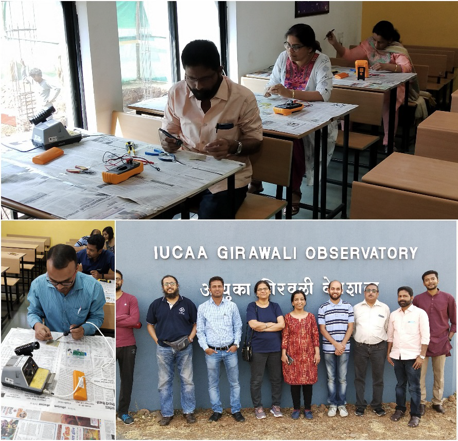
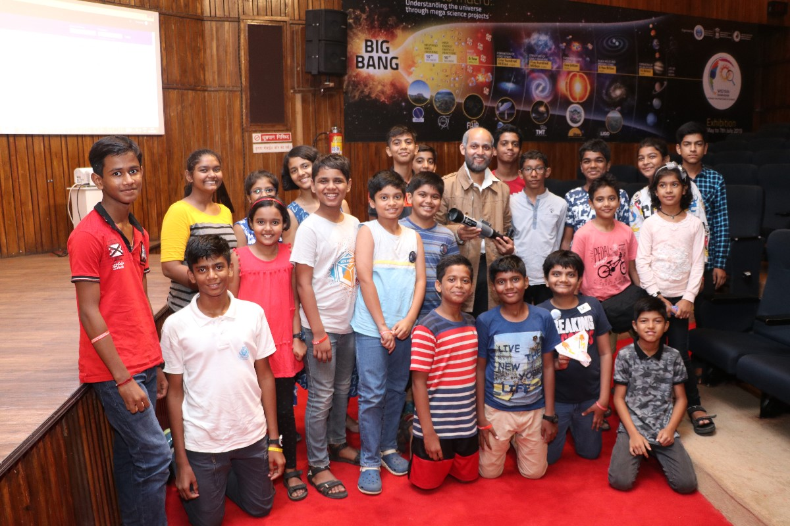

Programming
- Python
- MATLAB
- C/C++
- Git
- Linux
Researcher · Scientific programmer · Educator
I’m Shivom Gupta, an interdisciplinary researcher connecting cognitive neuroscience, Bayesian modelling and astrophysics. I build reproducible analyses that turn noisy signals into testable scientific insight.
Research Associate at ISS Delhi · Science Lead, Sakshi Sense

About
My route into research began in aeronautical engineering, where fluid dynamics taught me to understand physical systems through models. At the University of Geneva, that perspective expanded to planetary systems: I used TESS photometry, Gaussian Processes, MCMC and transit models to study reflected light from hot Jupiters.
Today, I apply the same quantitative instincts to the dynamics of the human brain. At the Institute of Science and Spirituality in Delhi, I study meditation, attention and consciousness using EEG, physiological sensing and time-series analysis. As Science Lead for Sakshi Sense, I help translate experimental research into robust analytical workflows.
Across astronomy and neuroscience, my work asks a consistent question: how can careful experiments and computation reveal meaningful structure in complex, noisy systems?
At a glance
A cross-disciplinary toolkit for designing experiments, building analyses and communicating results.
Research
My research connects measurement, inference and scientific software across two data-rich fields.
Current research
I investigate how mantra-based meditation influences neural state transitions, neuroplasticity and physiological resilience, with particular attention to semantics, selective attention and ageing.
Applied research
At ISS Delhi and Sakshi Sense, I contribute to experimental design, data validation and modelling of cognitive states. Work includes respiration estimation from noisy audio and Gaussian-Process joint models for latent-state studies.
Past research
My Geneva thesis combined TESS observations, Gaussian Processes and BATMAN transit models to search for reflected-light eclipses from hot Jupiters, producing four new and eight marginal detections.
Scientific software
I develop auditable preprocessing, statistical-analysis and visualization workflows for EEG and astronomical datasets, emphasizing documented decisions and reusable code.
Research record
Experience
From planetary systems to human cognition.
Cognitive neuroscience
Lead quantitative analysis of multi-channel EEG across meditation, mind-wandering and attention studies; create reproducible preprocessing workflows and support experimental design. Science Lead for Sakshi Sense since December 2025.
University education
Co-taught Alien Earths for the Lodha Genius Programme and supported Exploring the Universe for the Young India Fellowship.
Astrophysics
Worked on reflected light from hot Jupiters, NIRPS wavelength calibration, planetary atmosphere modelling and LyC-emitter visualization.
Research outreach
Managed public-engagement and teacher-training programmes connected to TMT, LIGO-India, AstroSat and Aditya-L1.
Science communication
Delivered workshops and school campaigns and helped initiate NASA EarthKAM and Project Paridhi activities reaching more than 50,000 students.
Leadership
Built a social venture connecting art and STEM education, collaborating with the European Astronomical Society and supporting women artists.
Education & funding
University of Geneva, Switzerland
Thesis: Reflected Light from Hot Jupiters as Seen by TESS ↗, supervised by Prof. Monika Lendl and Dr. Adrien Deline at Geneva Observatory.
Dr. A.P.J. Abdul Kalam Technical University, India
Thesis: Co-Flow Jet flow-control aerofoil.
Supervision
My supervision combines scientific rigor, hands-on practice and confidence-building.
Designed and taught a month-long introductory research programme for interns from IITs and BITS Pilani. Training covered EEG, ECG, GSR, experimental design, data collection and scientific methodology, with guidance on laboratory practice and research projects.
Mentored nationally selected high-school students in exoplanet detection, habitability, transit photometry, BATMAN modelling, observational proposals and scientific writing. Supervised undergraduate teaching assistants across the 2025 and 2026 cohorts and led an ARIES Observatory field visit.
Supported a multidisciplinary cohort of 46 fellows through discussions, office hours, assessment and final projects while coordinating academic communication and technical delivery.
Mentored students and trained teachers through astronomy workshops, telescope sessions, NASA EarthKAM, curriculum development and hands-on observational programmes.
Voluntarily taught Space Sciences to undergraduate juniors and served as an edX community teaching assistant for Super-Earths and Life.
Outreach
For nearly a decade, I have worked with students, teachers, researchers and public audiences—from groups of 30 to gatherings of about 1,500.
From undergraduate Space Sciences lectures to talks on exoplanets and conference presentations at COSPAR, I translate technical ideas for audiences with very different backgrounds.
I developed “Space Toys,” trained school teachers, led astronomy activity-booklet development and introduced NASA’s Sally Ride EarthKAM in schools across India.
My activities use observation, demonstrations, hands-on making and role play to include participants across ages, abilities and educational backgrounds. I have collaborated with NGOs and remote schools to take astronomy beyond conventional classrooms.
At IUCAA, I supported workshops on astronomy-themed experiments and helped participants fabricate and test solid-state night-sky photometers on telescopes.




Contact
I’m interested in PhD, research-scientist and scientific-software opportunities across cognitive neuroscience, machine learning and astrophysics.